The Structural Theory of Matter
In the mid-nineteenth century three individuals, working independently, laid the conceptual foundations for the structural theory of matter. August Kekulé, Archibald Scott Couper, and Alexander M. Butlerov each suggested that substances are defined by a specific arrangement of atoms. As an example, consider the following two compounds:
Boiling point = –23°C
Boiling point = 78.4°C
These compounds have the same molecular formula (C2H6O), yet they differ from each other in the way the atoms are connected—that is, they differ in their constitution. As a result, they are called constitutional isomers. Constitutional isomers have different physical properties and different names. The first compound is a colorless gas used as an aerosol spray propellant, while the second compound is a clear liquid, commonly referred to as “alcohol,” found in alcoholic beverages.
According to the structural theory of matter, each element will generally form a predictable number of bonds. For example, carbon generally forms four bonds and is therefore said to be tetravalent. Nitrogen generally forms three bonds and is therefore trivalent. Oxygen forms two bonds and is divalent, while hydrogen and the halogens form one bond and are monovalent (Figure 1.1).
| Tetravalent | Trivalent | Divalent | Monovalent |
|---|---|---|---|
|  Carbon generally forms four bonds | Nitrogen generally forms three bonds. | O−O Oxygen generally forms two bonds | H−, X− (where X = F, Cl, Br, or I) Hydrogen and halogens generally form one bond. |